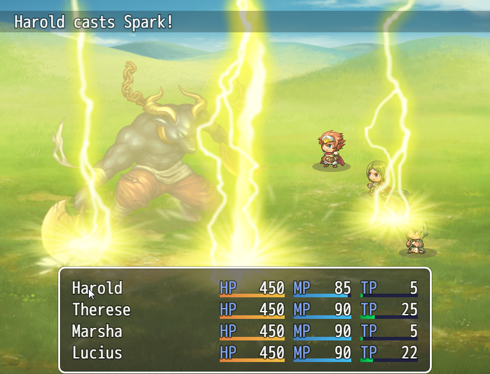

Side-view Battle
In addition to the Front-View Battle available in the previous version, a new Side-view Battle is now available.

Configuration Items for Side-view Mode
Now that Side-view Battle is now possible, actors are now displayed in the Battle Screen, and elements which can be set such as images and motions have been added.
- System: Use Side-view Battle
- When setting this to ON, in-game battles will now be in Side-view Mode.
Please view Database: [System Settings] for more information. - System: Magic Skills
- Configures Skill Types which require chanting motions.
Please view Database: [System Settings] for more information. - System: Attack Motions
- Sets an animation for each type when attacking.
Please view Database: [System Settings] for more information. - Actor: Battler
- Set the image of actors displayed during battle.
Please view Database: [Actor Settings] for more information. - State: Motion
- Sets animations displayed according to state of actor.
Please view Database: [State Settings] for more information. - State: Overlay
- Sets the image that is displayed over the actor's image according to the actor's state.
Please view Database: [State Settings] for more information.